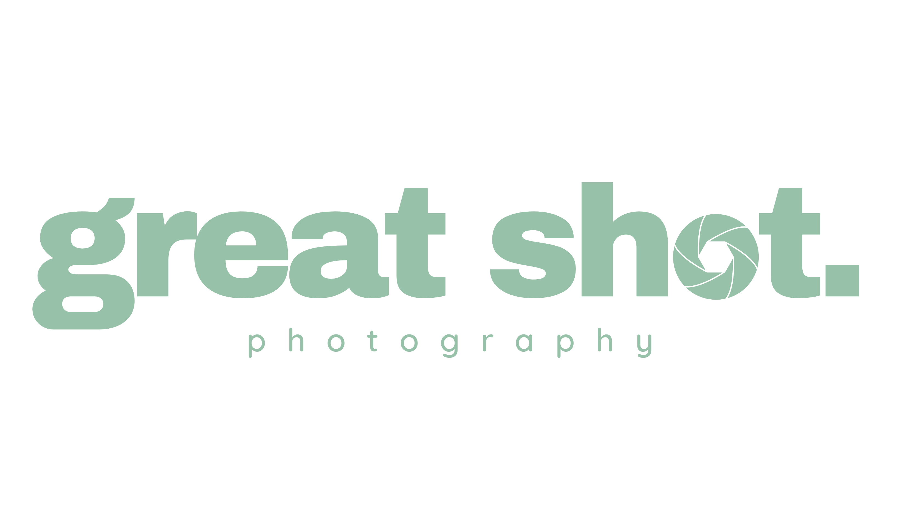
CH. 02 · PORTRAITPortrait corporate, personal branding, couples, particuliers. Un vrai temps posé pour se sentir à sa place, une image que l'on ose partager. Studio ou lumière naturelle, selon ce que raconte la personne.
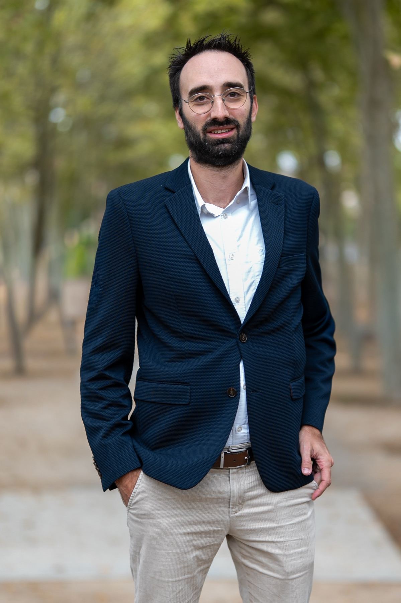
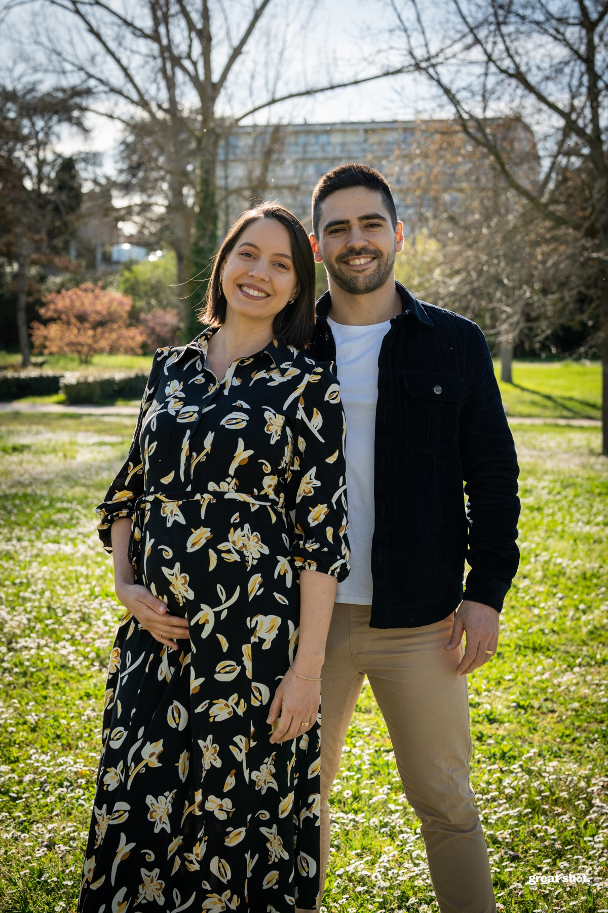
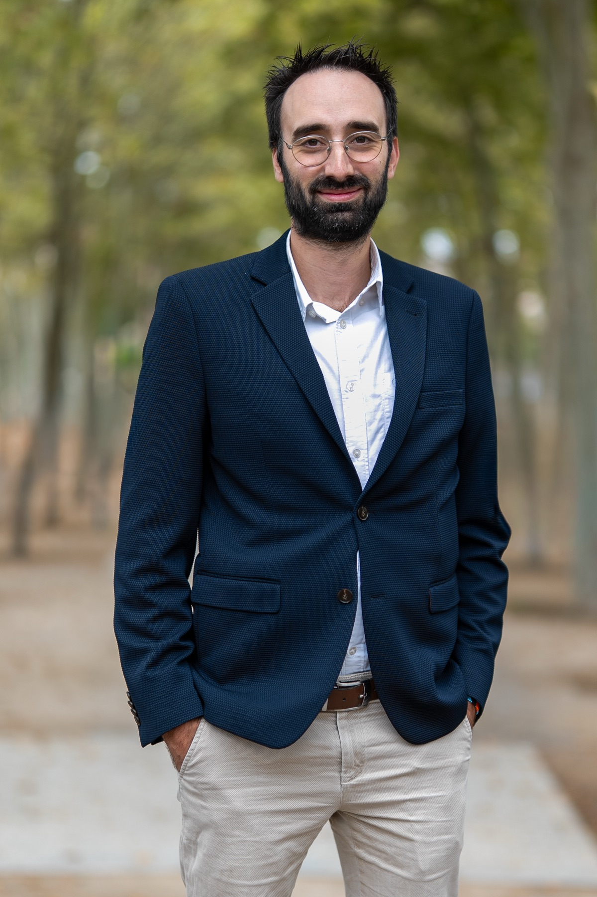
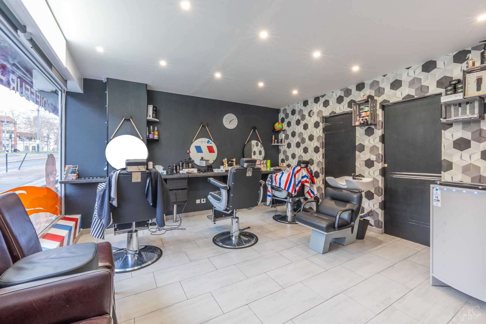
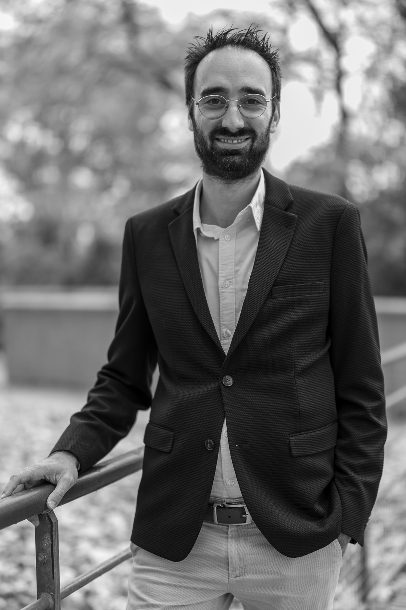
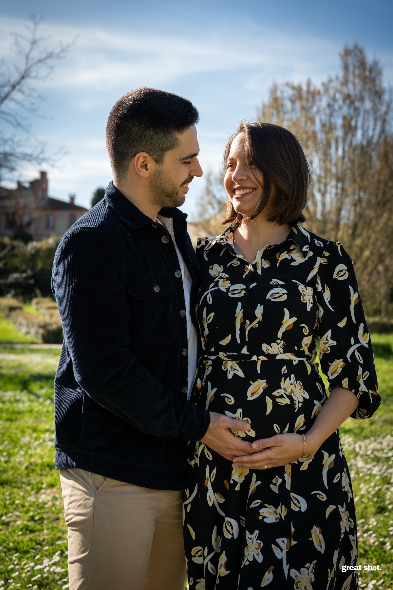
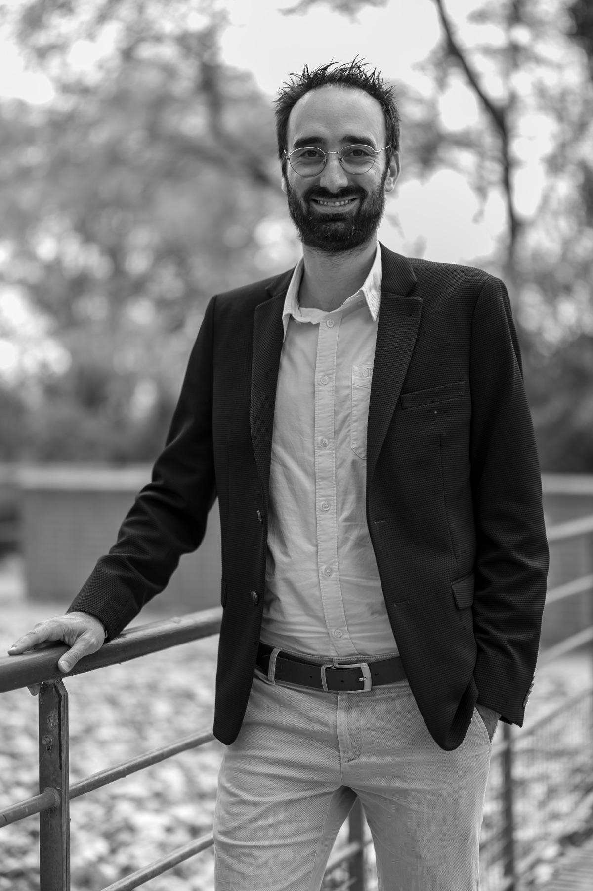
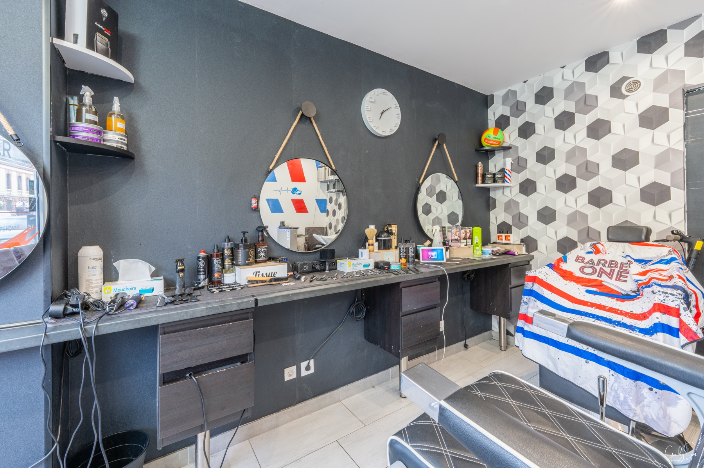
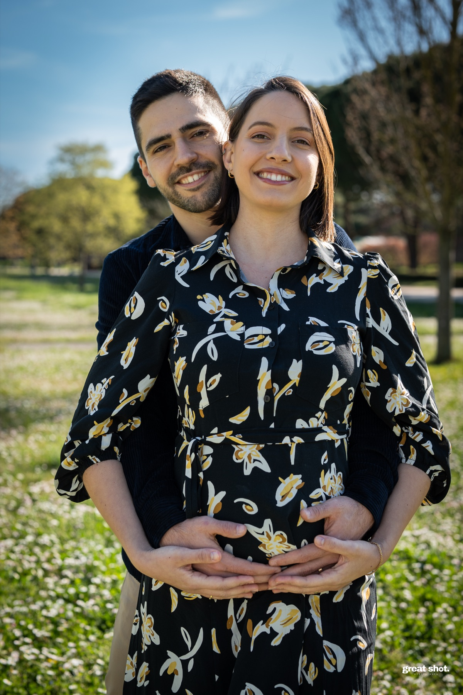
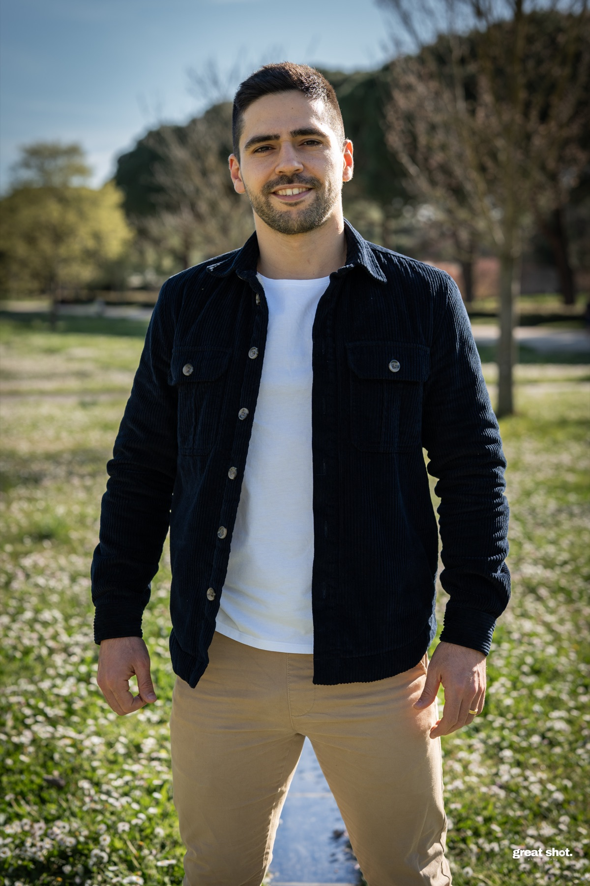
Durée, nombre d'images et livrables varient selon votre projet. Un devis clair sous 24 h.
Demander un devis portrait